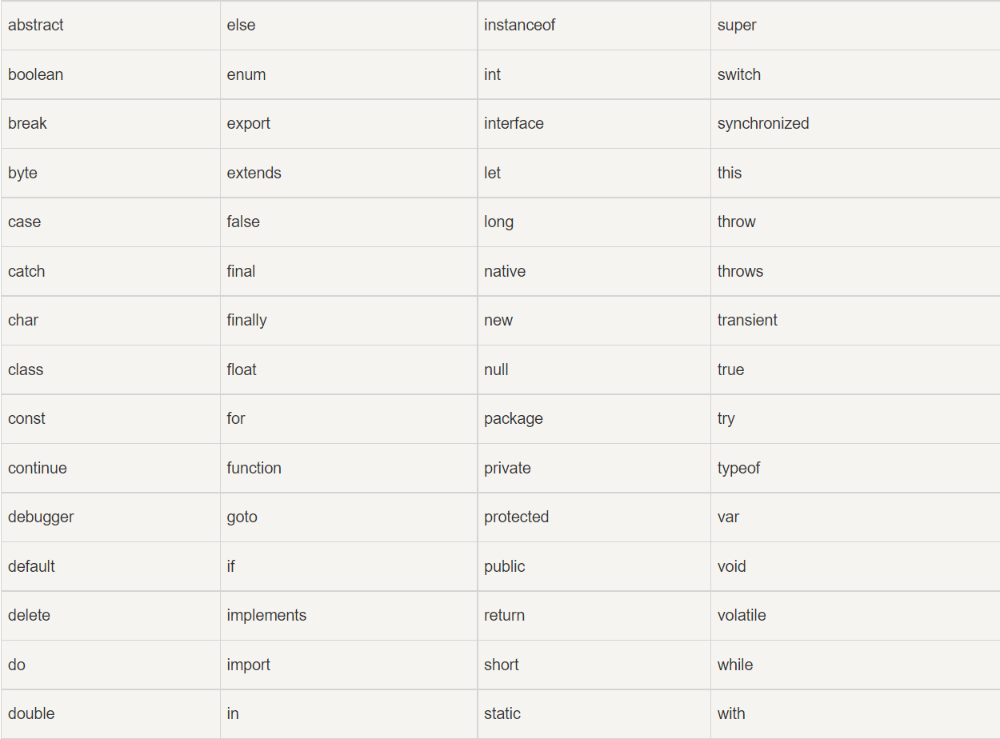

数字可以是整数也可以是小数，或者可以是科学计数e
字符串（String）字面量 可以使用单引号或双引号将内容括住
表达式数字量可以用来计算例如5+6,5*6
数组（Array）字面量 定义一个数组：
[40, 100, 1, 5, 25, 10]
对象（Object）字面量 定义一个对象：
{firstName:"John", lastName:"Doe", age:50, eyeColor:"blue"}
函数（Function）字面量 定义一个函数：
function myFunction(a, b) { return a * b;}
在编程语言中，变量用于存储数据值。
JavaScript 使用关键字 var 来定义变量， 使用等号来为变量赋值：
| 类型 | 实例 | 描述 |
|---|---|---|
| 赋值，算术和位运算符 | = + - * / | 在 JS 运算符中描述 |
| 条件，比较及逻辑运算符 | == != <> | 在 JS 比较运算符中描述 |
JavaScript 关键字用于标识要执行的操作。和其他任何编程语言一样，JavaScript 保留了一些关键字为自己所用。var 关键字告诉浏览器创建一个新的变量：
var x = 5 + 6;var y = x *
10;
JavaScript 同样保留了一些关键字，这些关键字在当前的语言版本中并没有使用，但在以后 JavaScript 扩展中会用到。以下是 JavaScript 中最重要的保留关键字（按字母顺序）：
JavaScript 对大小写是敏感的。当编写 JavaScript 语句时，请留意是否关闭大小写切换键。函数 getElementById 与 getElementbyID 是不同的。同样，变量 myVariable 与 MyVariable 也是不同的。
JavaScript 会忽略多余的空格。您可以向脚本添加空格，来提高其可读性。
可以用反斜线对代码行进行换行
就像代数那样 x=5,y=6,z=x+y在代数中，我们使用字母（比如 x）来保存值（比如 5）。通过上面的表达式 z=x+y，我们能够计算出 z 的值为 11。在 JavaScript 中，这些字母被称为变量。
变量必须以字母开头，也可以以$或者_开头(不推荐)，变量对大小写敏感
一条语句可以命名多个变量，该语句以var开头以;分隔,例：var lastname="Doe", age=30, job="carpenter";
声明也可以跨行用,分隔，但是一条语句声明的变量不可以赋同一个值：var x,y,z=1;
此语句中z为1，x和y为undefined
变量重新赋值
如果重新声明 JavaScript 变量，该变量的值不会丢失：在以下两条语句执行后，变量 carname 的值依然是 "Volvo"：
var carname="Volvo";
var carname;